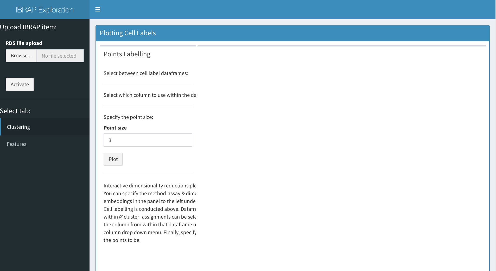
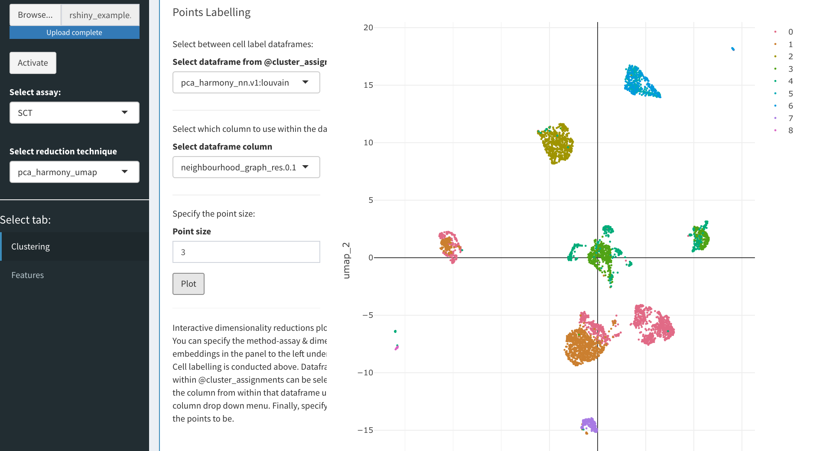
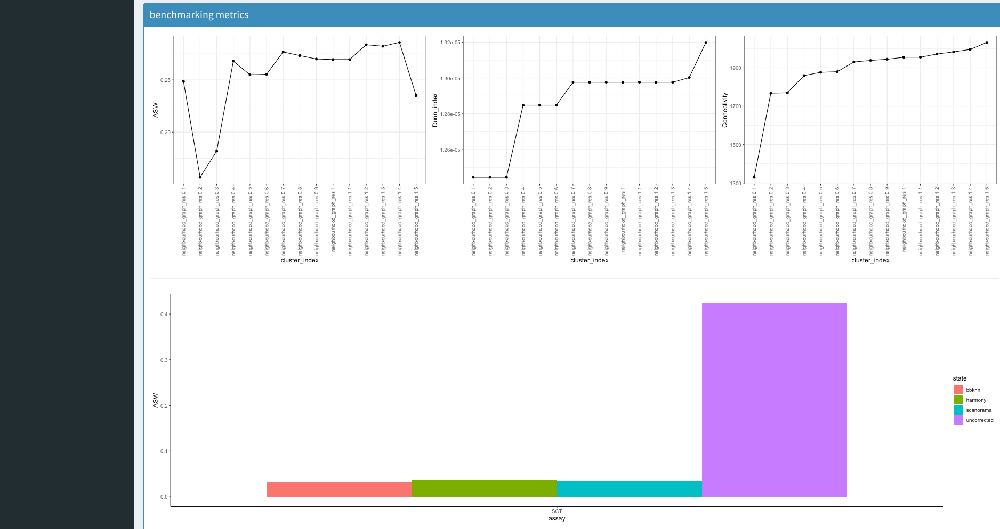

The RShiny application
Connor H Knight & Faraz Khan
11/08/2021
application.RmdRShiny Application Tutorial
Activating The App
In this tutorial we will explore how to use the rshiny application that create a GUI for users to observe results. We can activate the application using the following command:

Uploading Results
Next, we must upload our resultant file. The IBRAP objects must have been saved using the following command:
saveRDS(object = ibrap.obj, file = 'ibrap.rds', compress = T)
to upload your file: - select ‘browse…’ and choose your file. - once the file is loaded in, select activate.
## Plotting Cell Assignments

Now we can begin to explore the data. We can select between method assays on the left panel alongside the reduction technique contained within. On the right, we can create an interactive plot that will be based on the selected reduction technique. In the panel in the centre, we can select which dataframe of cluster results (or metadata) to access (this is constrained to relevant results to the selected reduction method), the point size is also adjustable below these selection boxes. Finally, we press plot and an interactive plot of the results is created. With this plot you are able to zoom in, remove certain clusters from the plot and even save it!
Interpreting Benchmarking Results

Underneath this we have some explanatory information from the benchmarking that was produced (this is not essential). The first box contains cluster assignemnt benchmarking. This either comes with 3 (no ground truth) or 5 (with ground truth) metrices.
ASW, Average Silhouette Width determines the separation of a cluster to its closest neighbour cluster
Dunn Index evaluates the compactness of a cluster and its distance to its closest neighbour cluster
connectivity determines how connecetd the cluster assignments points are to eachother
ARI, Adjusted Rand Index measures the agreement between the cluster assignments between the ground truth and novel assignments, this metric is adjusted for randomness
NMI, Normalised Mutual Information functions similarly to ARI however it is adjusted for cluster sizes
Underneath this we have a boxplot that will describe the ASW between batches if batch correction was performed. A higher value indicates higher batch effects whilst a lower demonstrates less.
Viewing Gene Information
Once we have finished assessing our clustering results we can begin to understand the biology that drove the clustering. For this, we can select the feature tab on the left panel. WARNING: this may take some time to load since there are lots of gene names to load!